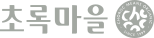

초록마을 Chorokmaeul
유기농·친환경 먹거리 전문 유통을 표방한 브랜드
최종 업데이트

초록마을은 어떤 브랜드인가
2001년 출범한 초록마을은 유기농·친환경 농산물과 가공식품을 전문으로 취급하는 매장 유통 모델을 도입했다. 관행농 중심 유통 구조 속에서 친환경 먹거리에 대한 소비자 접근성을 넓히는 것을 목표로 삼았다.
이후 전국 가맹점 형태로 확산되었다.
초록마을의 브랜드 아이덴티티는 무엇인가
건강·환경 가치를 내세운 먹거리 운동이 개별 매장 네트워크라는 상업적 유통 모델로 구현된 사례로, 가치 지향 소비와 프랜차이즈 확장이 결합된 구조를 보여준다. 친환경 인증 농산물 소싱망을 구축하고 전국 가맹 매장으로 유통망을 확장하는 방식으로 성장했다.
초록마을 연혁 — 주요 사건은 언제였나
초록마을 로고는 어떻게 변해왔나
자주 묻는 질문
초록마을의 브랜드 아이덴티티는 무엇인가요?
건강·환경 가치를 내세운 먹거리 운동이 개별 매장 네트워크라는 상업적 유통 모델로 구현된 사례로, 가치 지향 소비와 프랜차이즈 확장이 결합된 구조를 보여준다.
초록마을의 공식 웹사이트는 어디인가요?
초록마을의 공식 웹사이트는 https://www.choroc.com 입니다.
출처와 검증
초록마을 관련 참고: 공식 웹사이트. 브랜드명은 한글과 원어를 함께 표기하되 데이터에 없는 표기는 만들지 않습니다. 기원 국가·설립연도는 검수된 정의문에서 확인된 값을 우선하고, 없을 때만 공식 웹사이트 URL이 일치하는 위키데이터 개체의 값을 씁니다.